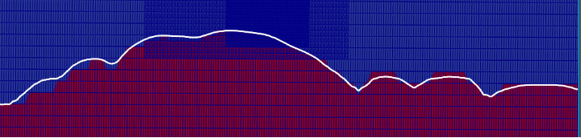

LES with Terrain
In this walkthrough, we discuss the steps to setup a terrain simulation using the newly implemented immersed boundary forcing method (IBFM). The theory for the technique can be found at this link.
The setup for the terrain follows the typical simulation of the atmospheric boundary layer (ABL) using large eddy simulation or Reynolds-averaged Navier Stokes turbulence models. The IBFM can be used with periodic or inflow-outflow boundary conditions with few modifications.
The first step in including the terrain is to set the terrain
variables. This is accomplished by modifying the ABL physics to
include the TerrainDrag flow physics: incflo.physics = ABL
TerrainDrag. This looks for the terrain.amrwind text file in
the case folder (this is the default name, the user can modify the
file it searches for by specifying the TerrainDrag.terrain_file
input parameter). The file contains the terrain height as a single
column organized as: nx, ny, x values (of length nx), y values (of
length ny), terrain height values (of length nx x ny).
The second step is the inclusion of the terrain forcing in the momentum and energy equations. This is
accomplished by adding DragForcing and DragTempForcing terms to ICNS.source_terms and
Temperature.source_terms, respectively. The terrain simulations requires adding a sponge layer
at the outflow and Rayleigh damping at top of the domain. Rayleigh damping is already available from
the existing forcing terms and can be used directly. The sponge-layer is implemented by specifying the boundary
and the span. For example, a sponge layer of size 1000 m at the east (+x) boundary,
we need to include DragForcing.sponge_east=1 and DragForcing.sponge_distance_east=1000 in the input file.
The sponge layer is not required for periodic boundary boundary conditions. The only input recommended for the
energy equation source term is the specification of the internal temperature of the terrain. This is
set as transport.reference_temperature=300. The current terrain setup can only
be used for the simulation of neutral ABL. A future release will update this calculation to automatically use
the values from a precursor simulation for both neutral and non-neutral stratification.
The terrain can be visualized by including io.int_outputs = terrain_blank in the input file.
It is recommended to use the ProbeSampler to create the terrain-aligned output planes. The easiest method
to generate the text file for ProbeSampler is to write the STL as a text file and then use offsets in
postprocessing to write the planes at different heights above the terrain. The terrain-aware output can
also be used with FAST.Farm and FLORIS.
An example paraview visualization of the terrain is shown below (with three levels of refinement):
{kind=link}
Here is a sample content of precursor and inflow-outflow input files to drive terrain simulations:
1# Generating the precursor file
2# Geometry
3geometry.prob_lo = 708751 5.00187e+06 446.15
4geometry.prob_hi = 723151 5.016e+06 2041.56
5geometry.is_periodic = 1 1 0
6# Grid
7amr.n_cell = 232 224 40
8amr.max_level = 0
9time.stop_time = -1
10time.max_step = 10000
11time.initial_dt = 0.1
12time.fixed_dt = -1
13time.cfl = 0.9
14time.plot_interval = 5000
15time.checkpoint_interval = 2000
16# incflo
17incflo.physics = ABL
18incflo.density = 1.225
19incflo.gravity = 0. 0. -9.81 # Gravitational force (3D)
20incflo.velocity = 10 0 0
21incflo.verbose = 0
22incflo.initial_iterations = 8
23incflo.do_initial_proj = true
24incflo.constant_density = true
25incflo.use_godunov = true
26incflo.godunov_type = "weno_z"
27incflo.diffusion_type = 2
28# transport equation parameters
29transport.model = ConstTransport
30transport.viscosity = 1e-5
31transport.laminar_prandtl = 0.7
32transport.turbulent_prandtl = 0.333
33transport.reference_temperature = 300
34transport.thermal_expansion_coefficient = 0.00333333
35# turbulence equation parameters
36turbulence.model = Kosovic
37Kosovic.refMOL = -1e30
38# Atmospheric boundary layer
39ABL.Uperiods = 72
40ABL.Vperiods = 72
41ABL.cutoff_height = 50.0
42ABL.deltaU = 1.0
43ABL.deltaV = 1.0
44ABL.perturb_ref_height = 50.0
45ABL.perturb_velocity = true
46ABL.perturb_temperature = false
47ABL.kappa = .41
48ABL.normal_direction = 2
49ABL.stats_output_format = netcdf
50ABL.surface_roughness_z0 = 0.1
51ABL.temperature_heights = 0 800 900 1900
52ABL.temperature_values = 300 300 308 311
53ABL.wall_shear_stress_type = local
54ABL.surface_temp_flux = 0
55ABL.bndry_file = "bndry_files"
56ABL.bndry_write_frequency = 100
57ABL.bndry_io_mode = 0
58ABL.bndry_planes = xlo ylo
59ABL.bndry_output_start_time = 434.028
60ABL.bndry_var_names = velocity temperature
61ABL.bndry_output_format = native
62# Source
63ICNS.source_terms = BoussinesqBuoyancy CoriolisForcing GeostrophicForcing RayleighDamping NonLinearSGSTerm
64CoriolisForcing.east_vector = 1.0 0.0 0.0
65CoriolisForcing.north_vector = 0.0 1.0 0.0
66CoriolisForcing.latitude = 90
67CoriolisForcing.rotational_time_period = 125664
68GeostrophicForcing.geostrophic_wind = 10 0 0
69RayleighDamping.reference_velocity = 10 0 0
70RayleighDamping.length_sloped_damping = 400
71RayleighDamping.length_complete_damping = 200
72RayleighDamping.time_scale = 5.0
73# BC
74zhi.type = "slip_wall"
75zhi.temperature_type = "fixed_gradient"
76zhi.temperature = 0.003
77zlo.type = "wall_model"
78mac_proj.mg_rtol = 1.0e-4
79mac_proj.mg_atol = 1.0e-8
80mac_proj.maxiter = 360
81nodal_proj.mg_rtol = 1.0e-4
82nodal_proj.mg_atol = 1.0e-8
83diffusion.mg_rtol = 1.0e-4
84diffusion.mg_atol = 1.0e-8
85temperature_diffusion.mg_rtol = 1.0e-4
86temperature_diffusion.mg_atol = 1.0e-8
87nodal_proj.maxiter = 360
1# Generating the terrain file
2# Geometry
3geometry.prob_lo = 708751 5.00187e+06 446.15
4geometry.prob_hi = 723151 5.016e+06 2041.56
5geometry.is_periodic = 0 0 0
6# Grid
7amr.n_cell = 232 224 40
8amr.max_level = 0
9time.stop_time = -1
10time.max_step = 10000
11time.initial_dt = 0.1
12time.fixed_dt = -1
13time.cfl = 0.9
14time.plot_interval = 5000
15time.checkpoint_interval = 2000
16# incflo
17incflo.physics = ABL TerrainDrag
18incflo.density = 1.225
19incflo.gravity = 0. 0. -9.81 # Gravitational force (3D)
20incflo.velocity = 10 0 0
21incflo.verbose = 0
22incflo.initial_iterations = 8
23incflo.do_initial_proj = true
24incflo.constant_density = true
25incflo.use_godunov = true
26incflo.godunov_type = "weno_z"
27incflo.diffusion_type = 2
28# transport equation parameters
29transport.model = ConstTransport
30transport.viscosity = 1e-5
31transport.laminar_prandtl = 0.7
32transport.turbulent_prandtl = 0.333
33transport.reference_temperature = 300
34transport.thermal_expansion_coefficient = 0.00333333
35# turbulence equation parameters
36turbulence.model = Kosovic
37Kosovic.refMOL = -1e30
38# Atmospheric boundary layer
39ABL.kappa = .41
40ABL.normal_direction = 2
41ABL.stats_output_format = netcdf
42ABL.surface_roughness_z0 = 0.1
43ABL.temperature_heights = 0 800 900 1900
44ABL.temperature_values = 300 300 308 311
45ABL.wall_shear_stress_type = local
46ABL.surface_temp_flux = 0
47ABL.bndry_file = "../precursor/bndry_files"
48ABL.bndry_io_mode = 1
49ABL.bndry_var_names = velocity temperature
50ABL.bndry_output_format = native
51# Source
52ICNS.source_terms = BoussinesqBuoyancy CoriolisForcing GeostrophicForcing RayleighDamping NonLinearSGSTerm DragForcing
53CoriolisForcing.east_vector = 1.0 0.0 0.0
54CoriolisForcing.north_vector = 0.0 1.0 0.0
55CoriolisForcing.latitude = 90
56CoriolisForcing.rotational_time_period = 125664
57GeostrophicForcing.geostrophic_wind = 10 0 0
58RayleighDamping.reference_velocity = 10 0 0
59RayleighDamping.length_sloped_damping = 400
60RayleighDamping.length_complete_damping = 200
61RayleighDamping.time_scale = 5.0
62# BC
63xlo.type = "mass_inflow"
64xlo.density = 1.225
65xlo.temperature = 300
66xhi.type = "pressure_outflow"
67ylo.type = "mass_inflow"
68ylo.density = 1.225
69ylo.temperature = 300
70yhi.type = "pressure_outflow"
71zhi.type = "slip_wall"
72zhi.temperature_type = "fixed_gradient"
73zhi.temperature = 0.003
74zlo.type = "wall_model"
75mac_proj.mg_rtol = 1.0e-4
76mac_proj.mg_atol = 1.0e-8
77mac_proj.maxiter = 360
78nodal_proj.mg_rtol = 1.0e-4
79nodal_proj.mg_atol = 1.0e-8
80diffusion.mg_rtol = 1.0e-4
81diffusion.mg_atol = 1.0e-8
82temperature_diffusion.mg_rtol = 1.0e-4
83temperature_diffusion.mg_atol = 1.0e-8
84nodal_proj.maxiter = 360
85#io
86io.restart_file = "../precursor/chk02000"
Setup using Python Tools
The setup of the terrain files can be cumbersome to do by hand. A set of python tools are made available at amrTerrain. A more comprehensive set of tools will be available in future at: windtools.
The python code is executed as follows:
python backendinterface.py nameofyamlfile.yaml
Sample input files are available in the GitHub repository. A typical sample file looks as follows:
1solver: "amrWind"
2caseParent: "/Users/hgopalan/Documents/P101_AMR-Wind/Data/tempGUI"
3caseFolder: "WFIP2_test"
4caseType: "terrainTurbine"
5caseInitial: "amr"
6centerLat: 45.63374
7centerLon: -120.66047
8refHeight: 2184
9west: 5000
10east: 5000
11south: 5000
12north: 5000
13cellSize: 128
14verticalAR: 4
15timeMethod: "step"
16numOfSteps: 5000
17plotOutput: 1000
18restartOutput: 1000
19forcingHeight: 10.0
20windX: 13.5
21windY: 0.0
22windZ: 0.0
23refTemperature: 300.0
24refRoughness: 0.1
25refHeatflux: 0.0
26refLat: 45.63374
27refPeriod: 125663.706143592
28includeCoriolis: True
29turbineMarkType: "database"
30turbineType: "UniformCtDisk"
The variable caseType takes three kinds of inputs: precursor or terrain or terrainTurbine. For
running terrain simulations, it is recommended to use caseType:terrain. The use of caseType:terrainTurbine
also creates turbines aligned with the terrain height using the turbine latitude and longitude in the file turbine.csv.
The python code first reads the centerLat and centerLon and creates a domain of size specified by
west, east, south, and north. For the example shown above, a domain size of 10 km is created
around centerLat and centerLon. The terrain module uses the SRTM 30 m database to create the terrain.
It is possible to add a user-defined file to define the terrain by modifying the python code.
The cellSize: 128 sets a grid resolution of 128 m at level 0.The variable verticalAR: 4 sets dz=4dx=4dy.
You do not need Hypre to run the high aspect ratio simulations. User has to manually edit the
input file to create refinement regions in area of interest around the terrain.
All other inputs in the yaml file are for creating dummy inputs to the AMR-Wind simulations and user can
modify them manually to fit their needs. The inputs caseType: "terrainTurbine" and turbineType: "UniformCtDisk"
are useful for aligning the turbine vertically with the terrain. The file includes all the turbines within the continental
US and have to be modified for other locations. The turbine type information is ad-hoc and has to be manually modified by
the user for the specific turbine type. A future update to the code will include options to specify the turbine information
from a text file.